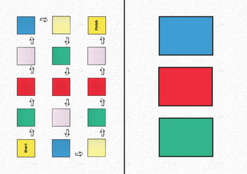
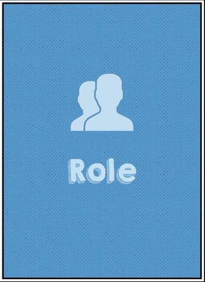
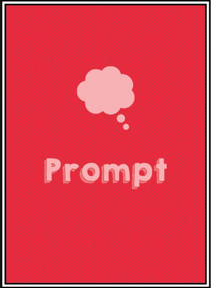
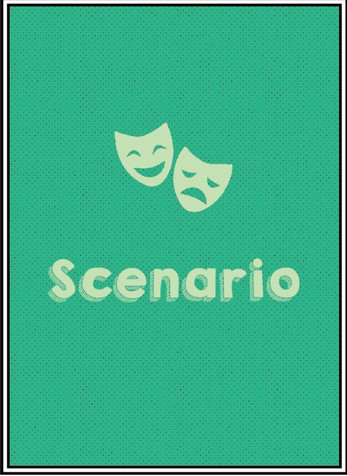
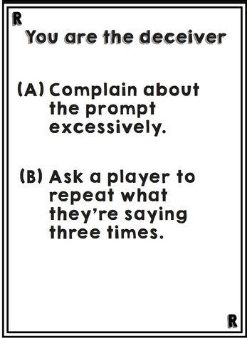

Pseudo
A Social Deduction card game for 4-8 players
This game was made for an entry to The Campus Game Jam in 2022 where it continued to win "Best Board Game".
Pseudo is a somewhat fresh take on a social deduction game that acts as a great ice-breaker. Players have to answer prompts whilst acting out hilarious scenarios and sniffing out who among them is the Deceiver.
This game was made with 3 other team members in only 72 hours

